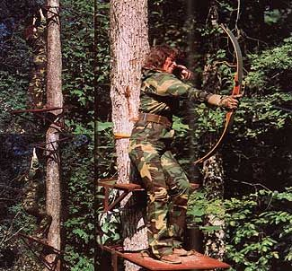
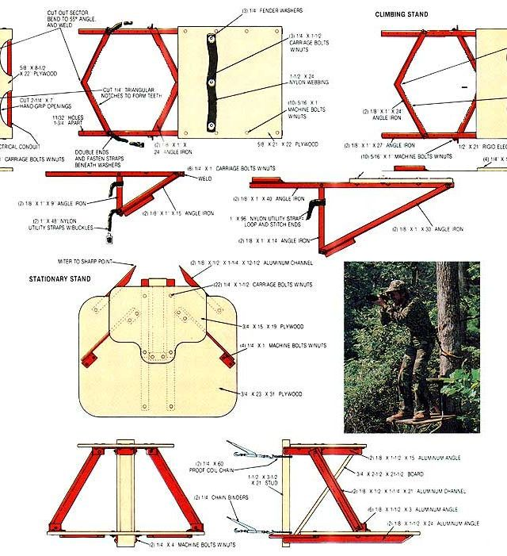

A tree stand can open a new world to the outdoorsperson. Here are two that you can make.
People who appreciate the outdoors realize that it's necessary to be unobtrusive if you're to best enjoy its appeal; those who are least conspicuous are most likely to view nature's surprisingly busy agenda. To a hunter or wildlife photographer, this frequently means picking an advantageous spot in the woods and simply staying put until something of interest comes along. And, for a number of reasons, the best spot is often one a dozen or more feet off the ground . . . where the lanes of sight are less obstructed, the view is nearly panoramic, and the possibility of human scent being noticed is reduced considerably.
The two tree stands that we've detailed here can both provide efficient observation or shooting platforms. One is a stationary stand that folds flat, weighs 20 pounds, and can be hauled up a tree with a line or positioned with the help of a ladder. Once raised, it's chained, top and bottom, around the trunk of the tree and secured with lever binders that draw the coils tight. The foot platform measures a comfortable 23" X 31", and the seat is contoured to accommodate the thighs. The metal parts are lightweight extruded aluminum, available from a fabricator's supply house . . . but steel angle and channel can be used as an alternative if weight is not a factor.
Since installing the stationary model is enough of a chore to convince most people to leave the stand in place for an extended period once it's secured to a tree, it's best suited for use on private property rather than public lands (where, in most cases, tree stands must be removed daily). Therefore, we've also illustrated a two-piece climbing version that has staggered girths that grip the tree trunk when the platforms are in a horizontal position. To use it, a climber merely has to stand on the installed foot platform with the seat section dug in overhead, then pull him- or herself up-using the built-in handles-while lifting the lower platform with the foot loops provided. Once the bottom section is locked in its new position, the process is repeated until the desired height is achieved.
The framework on this model is 1/8" X 1" angle iron, which should easily support an average-sized individual . . . but, if necessary, feel free to upgrade the stand by using larger sections of angle . . . and, of course, check all of the components for signs of wear before taking to the trees. Eight pairs of mounting holes allow the girths to be adjusted to suit the diameter of the trunk you choose to climb, and nylon utility straps help secure the grip once you've attained the height you want.
Before you start your trek into the wilderness, keep these points in mind: Never climb a tree while carrying sharp or pointed equipment that could injure you in a fall; instead, pull your gear up once you're perched. Always wear a safety belt and extension strap when using a tree stand, no matter how comfortable you feel with heights. And please be considerate of the forest that's hosting your visit; choose a tree that'll require little or no trimming, so your impact on it will be minimal.
|
 THIS PAGE: Our climbing stand, which is ideal for hunting, can ""inchworm"" its way up a tree. FACING PAGE: The stationary stand provides a stable perch for hunting or wildlife-photography. |
 |
|